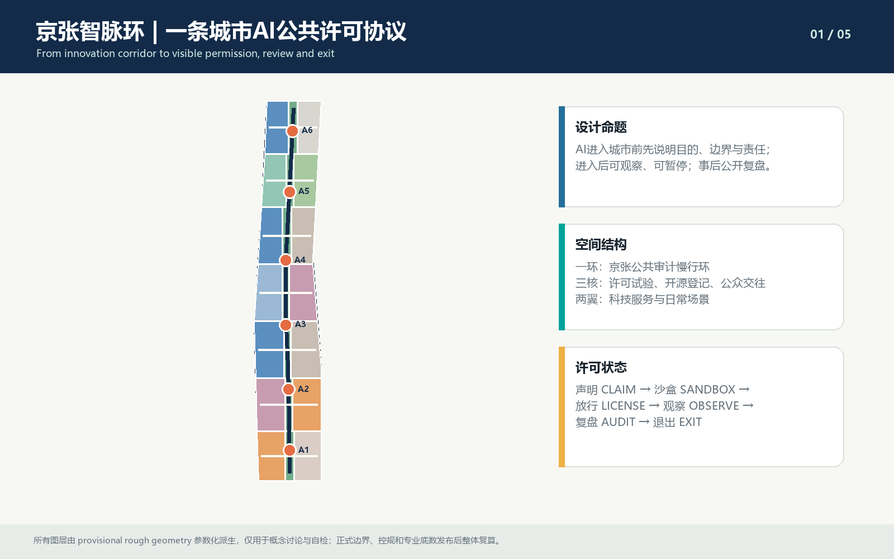
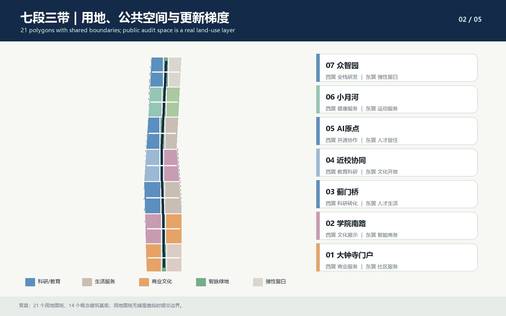
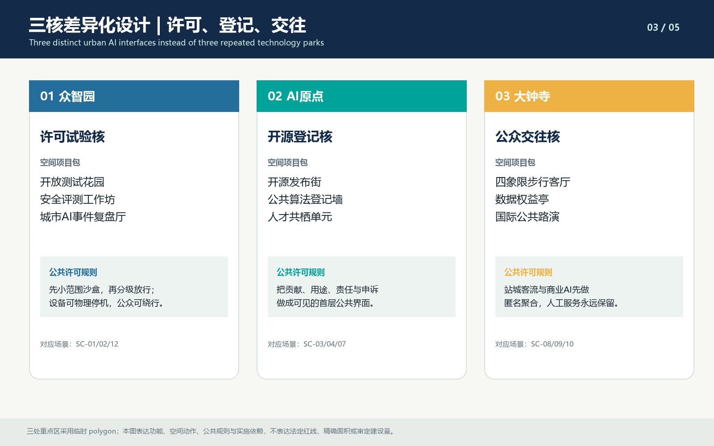
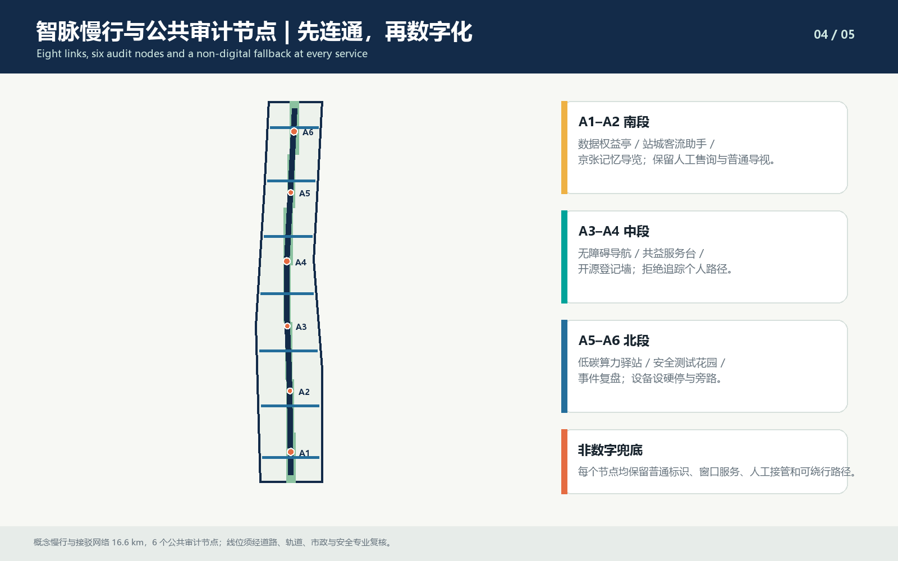
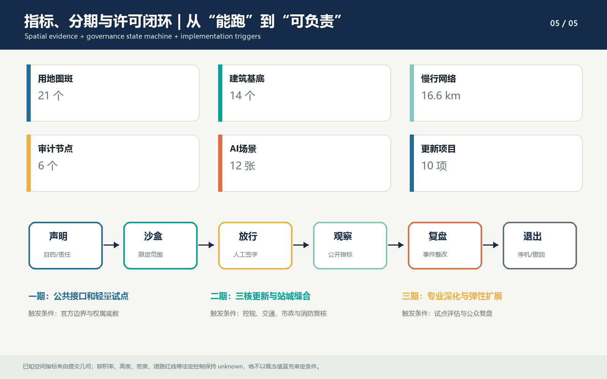

京张智脉环：公共可审计的AI创新带城市设计概念建议
以京张遗址公园为公共脊柱，把AI进入城市的声明、沙盒、许可、观察、复盘和退出转译为空间制度；形成一环三核两翼、七段三带、六个公共审计节点、十二张场景卡和十项更新项目。全部结论均为概念建议，基于provisional geometry生成，待官方边界与专业底数发布后整体复算。
京张智脉环：公共可审计的AI创新带城市设计概念建议
方案声明：让 AI 进入城市之前先获得公共许可
“京张智脉环 / Jing-Zhang Synapse Loop”回答的不是“在哪里再放一个 AI 园区”，而是一个更具体的问题：当模型、机器人、算法服务和数据设施真正进入街道、社区、车站和公园时，城市如何让其目的、边界、责任、运行状态和退出方式对公众可见。
方案以京张遗址公园为公共脊柱，把铁路时代“信号—联锁—放行—复盘”的安全逻辑转译为城市 AI 的六状态协议：
1. **声明 CLAIM**：说明服务对象、目的、数据、责任主体和有效期。 2. **沙盒 SANDBOX**：先在限定空间、限定人群、限定时段内测试。 3. **许可 LICENSE**：由具名责任人完成技术、公共利益和安全复核。 4. **观察 OBSERVE**：只公开必要的运行指标、异常和人工接管记录。 5. **复盘 AUDIT**：事件去标识后进入独立复核，形成整改和重新放行条件。 6. **退出 EXIT**：到期、拒绝、异常或条件变化时可停机、撤回、绕行和恢复人工服务。
这六个状态不是软件流程图，而是城市设计对象：众智园承载“沙盒与许可”，北京 AI 原点社区承载“声明与公共登记”，大钟寺承载“观察、公众交往和数据权益”，六个公共审计节点承担申诉、人工兜底、事件复盘与非数字路径。由此形成“一环三核两翼、七段三带、六节点十二场景”的总体结构。[source:AGENT-TASKBOOK] [depth:overall_spatial_structure]

本方案是开放共创的**概念建议/参考方案**。它不构成法定规划、控规调整、工程设计、政府审定、招商承诺或保证实施；其中 SITE_BOUNDARY、KEY_AREA、用地、建筑、道路、公共空间和分期均受 provisional geometry 限制。
设计依据与资料清单
第一依据是北京市规划和自然资源委员会海淀分局发布的资格预审公告 [source:OFFICIAL-ANNOUNCEMENT]，用于确认三层范围、三处重点区、工作深度和专业任务；第二依据是清权的智能体任务书 [source:AGENT-TASKBOOK]，用于确认命名、案例、场景、画像、地标、文化和长期运营等开源征集任务。结构化边界、枚举、缺口、标准和校验规则来自 [source:SITE-PACKAGE]、[source:SOURCE-REGISTRY] 与 [source:PROCESSED-FACT-PACK]。
方案只按以下三类使用资料：
| 资料层级 | 可做的判断 | 不可越过的边界 | | --- | --- | --- | | official_public / cleared | 任务、范围层级、设计要求、标准框架、公开事实 | 不等同于官方 polygon、控规指标或工程底数 | | provisional_only | 生成概念图层、复算提交几何、制作图件与自检 | 不得冒充官方红线、精确面积或审批依据 | | missing / pending | 登记为假设、风险和正式深化触发条件 | 不得用 agent 推测值填补 |
当前 \geometry/site_boundary.geojson\ 来自 [source:BOUNDARY-SOURCE]，三处重点区域来自 [source:KEY-AREA-SOURCE]，均标注 \official_boundary=false\、\geometry_role=provisional_constraint\。其用途仅限于生成、讨论、展示和自检。官方 polygon 到位后，必须同时重算用地、建筑、道路、绿地、公共空间、分期、指标、五张图、A3/A0、HTML 和 manifest 哈希，而不是只替换一个边界文件。[data:geometry/site_boundary.geojson#SITE-001] [data:geometry/key_areas.geojson#PROV-KEY-001]
专业依据包括城市设计管理、控制性详细规划、建筑工程设计深度和国土空间用地分类等仓库标准快照：[standard:MOHURD-URBAN-DESIGN-MEASURES]、[standard:MOHURD-CONTROL-DETAILED-PLANNING]、[standard:MOHURD-ARCH-DESIGN-DEPTH-2016]、[standard:MNR-LAND-USE-CLASSIFICATION-GUIDE]。公告与智能体任务的效力边界分别由 [standard:PROJECT-OFFICIAL-ANNOUNCEMENT] 和 [standard:PROJECT-AGENT-OPEN-CALL-TASKBOOK] 说明。
现状诊断采用“可核验—需补测—不可推测”三分法 [depth:existing_conditions_diagnosis]：
- 可核验：公告文字范围、三处重点区任务、公开文化资源、提交几何的拓扑和复算值。
- 需补测：现状建筑、首层业态、权属、轨道出入口、文保边界、道路断面、市政和消防容量。
- 不可推测：法定容积率、高度、密度、退线、拆除结论、投资额和政府实施时序。
三层范围工作框架
三层范围不是三张比例尺不同的图，而是三类不同决策。统筹研究范围决定产业链与未来城市机制；总体设计范围把机制转译成用地、慢行、蓝绿、公共服务和更新项目；三处重点区域用空间项目包检验这些判断是否能被执行和复核。[depth:three_level_scope_framework]
| 层级 | 核心问题 | 本方案回答 | 可核查成果 | | --- | --- | --- | --- | | 统筹研究范围 | AI 创新生态为何在此形成、如何外溢 | “策源—验证—转化—服务—公众采用—复盘”六环链 | 6 个案例转译、产业服务链、许可协议 | | 总体设计范围 | 产业与公共利益如何落到空间 | 一环三核两翼、七段三带、21 个用地图斑 | 用地、建筑、道路、绿地、公共空间、分期与指标 | | 三处重点区域 | 同一创新带如何避免三个重复园区 | 许可试验核、开源登记核、公众交往核 | 3 个差异化项目包、9 个主场景、实施依赖 |
总体结构由三条带叠合：
- **智脉公共带**：京张遗址公园、连续慢行和六个公共审计节点。
- **中关村科技服务带**：知识产权、标准、法务、算力、人才与国际合作接口。
- **小月河日常场景带**：健康、教育、社区服务、运动和低碳生活的可验证试点。
七个分段从南向北形成“大钟寺门户—学院南路—蓟门桥—近校协同—AI 原点—小月河—众智园”的开放度梯度。南段面向公众和国际交往，中段面向成果转化与人才生活，北段面向高门槛的安全测试与标准治理。下层只能细化上层判断，不能凭临时图形倒推出权属、控规或工程结论。

统筹研究范围产业与未来城市研究
六个国际案例及其可转译机制
案例研究不以“复制成功城市”为目标，只提取与京张沿线问题直接相关的机制。案例事实采用项目或公共机构官方页面，正式深化时仍需逐条核验。
| 案例 | 官方资料中的核心特征 | 京张可转译机制 | | --- | --- | --- | | 伦敦 King’s Cross | 铁路土地再生、公共空间、历史建筑再利用和混合功能 [source:CASE-KINGS-CROSS] | 先完成连续公共脊柱和历史叙事，再分期导入产业与生活 | | 新加坡 one-north | 研发、企业、创业生态集聚并把片区作为 living lab [source:CASE-ONE-NORTH] | 把产业空间、孵化、生活和真实场景测试组织为同一街区系统 | | Munich Urban Colab | 城市、科研、企业与公众共同开发和测试城市方案 [source:CASE-MUNICH-COLAB] | 建立具名责任、公众观察和联合复盘的开放测试机制 | | Seoul AI Hub | 公共平台连接创业、科研与产业生态 [source:CASE-SEOUL-AI-HUB] | 西翼形成共享的标准、法务、算力和产业服务入口 | | Montréal Mila / Mile-Ex | 非营利研究共同体、产业转化与创新街区锚定 [source:CASE-MILA] | AI 原点将近校研发、开源发布、人才生活和社区协作置于步行邻近 | | Toyota Woven City | 人本导向、分期学习、居民共创的 mobility test course [source:CASE-WOVEN-CITY] | 试验先限定范围和参与条件，并用事件记录决定是否扩大 |
六个案例共同指向一个设计判断：AI 创新带真正稀缺的不是“更多办公面积”，而是**可以合法试错、公众知道边界、事故能够复盘的物理空间与制度接口**。因此，方案把核心公共投资建议放在测试花园、登记墙、申诉台、人工窗口、非数字路径和复盘厅，而不是标志性总部建筑。
产业生态：六环链与两翼服务
1. 高校与研究机构提供**策源**。 2. 众智园提供**安全验证与标准治理**。 3. AI 原点提供**开源转化与人才服务**。 4. 中关村西翼提供**法务、知识产权、资本、算力和数据合规服务**。 5. 大钟寺与小月河东翼提供**公众采用和日常城市试点**。 6. 六个公共审计节点提供**事件复盘和社会许可更新**。
未来城市形态由此形成四条可检验原则：人、非机动车与低速设备路径要可区分，交叉处有明确优先级；感知和算力集中在可识别节点，不以满街无差别监控为默认；每项 AI 服务保留普通标识、人工窗口、可绕行路线或非智能版本；每项服务具有责任人、期限、暂停、申诉和退出机制。上述内容是产业与城市设计的概念建议，不构成现行政策、政府活动或投资承诺。
总体设计范围城市更新与控规深度城市设计
总体设计采用“一环三核两翼、七段三带”的空间结构 [depth:overall_spatial_structure]。21 个用地图斑以共享坐标边界无缝覆盖临时提交范围，形成西翼功能带、中央智脉公园与东翼功能带；它表达功能供给和更新梯度，不表达法定地类调整。[data:geometry/land_use.geojson#LU-01-W] [depth:land_use_layout]
七段功能与城市界面
| 分段 | 西翼 | 中央智脉 | 东翼 | 主要城市动作 | | --- | --- | --- | --- | --- | | S1 大钟寺门户 | 商业服务 | 数据权益与站城客厅 | 社区服务 | 四象限步行、人工服务、国际公共路演 | | S2 学院南路 | 文化展示 | 京张记忆门 | 智能商务 | 历史导览与技术展陈并置 | | S3 蓟门桥 | 科研转化 | 慢行缝合节点 | 人才生活 | 跨越断点、补足社区服务 | | S4 近校协同 | 教育科研 | 共益服务台 | 文化开放 | 校园—园区—社区共享首层 | | S5 AI 原点 | 开源协作 | 开源登记广场 | 人才居住 | 发布、登记、申诉、协作与夜间生活 | | S6 小月河 | 健康服务 | 低碳算力驿站 | 运动服务 | 日常 AI 服务和蓝绿活动叠合 | | S7 众智园 | 全栈研发 | 安全测试花园 | 弹性留白 | 沙盒、许可、硬停、观察与复盘 |
城市更新方法
本方案不在缺少现状建筑和权属资料时编造拆改留清单，而是建立五级动作：
1. **留白**：功能和技术不确定时，不急于固化建设量。 2. **界面改造**：优先首层开放、无障碍、慢行和公共服务。 3. **适应性再利用**：结构可用但功能不适配时，先改造再增量。 4. **谨慎加建**：在专业复核后补足共享空间、能源和安全设施。 5. **拆除新建**：仅在结构、消防、文保、权属和成本均证明必要时进入决策。
提交的 14 个概念建筑基底用于表达程序分布和更新方法，不是现状建筑测绘、规划许可或新建承诺。[data:geometry/buildings.geojson#BLDG-01-W] [depth:retain_renovate_demolish]
建筑高度、体量、屋顶和风貌遵循“智脉沿线低扰动、节点适度集聚、历史资源让位、公共首层连续”的概念方向；任何高度、密度、容积率和退线数值都保持待确认。[depth:height_massing_character] [depth:development_intensity_controls]
重点区域详细设计
三处重点区不是复制粘贴的科技园。它们分别对应城市 AI 生命周期的不同环节，并以项目包、场景、公共规则和实施触发条件共同构成详细设计。[depth:three_key_area_detailed_design]

1. 众智园：城市 AI 许可与安全试验核
**设计定位**：全栈研发不是封闭园区，而是有可观察边界的城市 AI 许可场。
- **开放测试花园**：设置人行主路径、设备测试环、公众观察廊和可绕行外环；测试区以颜色、时段和责任牌明确边界。
- **安全与标准工作坊**：把模型评测、红队、安全标准和事故案例转化为可预约参观的公共界面。
- **城市 AI 事件复盘厅**：事件记录先去标识，由独立复核者、运营者和公众代表形成整改与重新放行条件。
- **清河低碳界面**：将雨洪、绿道、低碳算力和研发交流叠合，但河道、防洪和生态条件须专业复核。
主场景为 SC-01、SC-02、SC-12。测试须有硬停、人工接管、公众绕行和到期退出。空间依据为 [data:geometry/key_areas.geojson#PROV-KEY-001]，但边界仍为 provisional。
2. 北京 AI 原点：开源转化与公共登记核
**设计定位**：把“从论文到产品”的最短路径转化为“从贡献到公共责任”的可见街区。
- **开源发布街**：高校成果、初创工具和社区问题在同一首层界面配对，发布前完成来源、许可证和责任确认。
- **公共算法登记墙**：每项面向公众的 AI 服务公开目的、数据、责任、期限、人工兜底、申诉和退出。
- **人才共栖单元**：工作、居住、学习、托育、运动和夜间协作保持步行邻近，避免只建办公不建生活。
- **近校共益服务台**：居民和照护者可提出问题、拒绝参与、要求人工处理或追踪整改。
主场景为 SC-03、SC-04、SC-07。其空间依据为 [data:geometry/key_areas.geojson#PROV-KEY-002]；权属、现状建筑和校地边界未明确前，不作拆除和建设量结论。
3. 大钟寺：站城交往与数据权益核
**设计定位**：让智能消费和国际交往以数据权益、步行连续和人工服务为前提。
- **四象限步行客厅**：以站点周边连续公共空间连接商业、社区和产业入口；具体线位待轨道、道路和市政复核。
- **数据权益亭**：公众可查询授权用途、撤回同意、提出投诉，并获得人工服务。
- **国际公共路演厅**：路演同时说明技术、公共影响、数据边界、责任人和退出方式。
- **京张记忆门**：以公开史料和可核验叙事连接铁路遗产与 AI 新文化，不使用未授权商标、肖像和图像。
主场景为 SC-08、SC-09、SC-10。空间依据为 [data:geometry/key_areas.geojson#PROV-KEY-003]；道路红线、站点接口和消防疏散均为深化触发条件。
AI 创新生态、人才画像与 AI+ 场景
方案以“谁提出问题、谁承担责任、谁能够退出”为场景设计起点，而不是以设备清单起点。六类核心人才画像分别为：高校研究者、初创团队、公共部门产品负责人、社区照护者、城市运维人员、独立审计与公益组织。园区运营者应同时记录专业使用者与被服务公众的反馈，避免只用企业入驻率判断创新成效 [metric:personas_count]。
| 人才画像 | 主要需求 | 对应空间 | 公共保障 | | --- | --- | --- | --- | | 高校研究者 | 跨校合作、开源发布、真实问题 | AI 原点发布街、近校协同首层 | 来源登记、成果许可与可撤回试点 | | 初创团队 | 小规模验证、法务与算力 | 众智园测试花园、西翼服务带 | 沙盒期限、事故责任与低成本退出 | | 公共产品负责人 | 采购前验证、效果复盘 | 城市 AI 许可厅、复盘厅 | 公开目标、采购隔离与人工复核 | | 社区照护者 | 无障碍、人工服务、拒绝数字化 | 小月河日常场景带、大钟寺权益厅 | 非数字路径、申诉窗口与数据最小化 | | 城市运维人员 | 可维修、可停机、跨部门联动 | 智脉环运维节点、低碳算力驿站 | 硬停、值守、日志与事件分级 | | 独立审计与公益组织 | 检查证据、代表弱势群体 | 六个公共审计节点 | 去标识证据、定期听证与利益冲突披露 |
十二张场景卡把产业验证与日常城市生活绑定。每张卡必须保留人工兜底、到期退出和最小必要数据；表中“数据”只描述类型，不构成采集授权。
| ID | 场景与空间 | 使用者 | 最小必要数据 | 人工兜底与退出 | | --- | --- | --- | --- | --- | | SC-01 | 众智园低速配送设备测试环 | 研发者、步行者、运维员 | 设备状态、去标识冲突事件 | 现场安全员硬停；许可到期撤场 | | SC-02 | 城市 AI 红队与事件复盘厅 | 模型团队、审计者、公众代表 | 测试版本、故障类型、处置链 | 独立复核；未通过不得转入公开环境 | | SC-03 | AI 原点开源发布与依赖登记 | 研究者、开发者、公益组织 | 代码版本、许可、依赖清单 | 线下登记台；争议版本暂停发布 | | SC-04 | 公共算法登记与申诉 | 服务运营者、普通市民 | 服务目的、责任人、申诉状态 | 人工窗口；服务可暂停或撤销 | | SC-05 | 近校学习与就业匹配 | 学生、转岗者、用人机构 | 自愿提交的技能与岗位条件 | 导师复核；允许完全线下申请 | | SC-06 | 小月河无障碍出行辅助 | 老年人、视障者、照护者 | 路径障碍、用户主动请求 | 志愿者和人工热线；可关闭定位 | | SC-07 | 社区问题到原型的公益服务台 | 居民、研究者、社区工作者 | 问题描述、联系方式（可匿名） | 社工受理；未获同意不进入训练集 | | SC-08 | 大钟寺数据权益查询与撤回 | 通勤者、消费者、游客 | 授权记录与撤回状态 | 人工权益专员；即时冻结争议处理 | | SC-09 | 国际公共 AI 路演 | 创业团队、公众、国际访客 | 项目披露、风险说明、问答记录 | 现场主持与纸质材料；路演不等于许可 | | SC-10 | 站城客流辅助与应急疏导 | 乘客、站务、应急人员 | 聚合客流、事件位置 | 站务人工指挥优先；平时不做身份识别 | | SC-11 | 低碳算力预约与余热展示 | 研究团队、能源运维、公众 | 作业量、能耗与设备状态 | 人工调度；超阈值降载或停机 | | SC-12 | 清河雨洪与生态巡检 | 河道管理者、公众观察员 | 水位、积水点、设备状态 | 人工巡检和封闭警戒；不自动作审批判断 |
三处“AI 朝圣地标”不是大体量形象建筑，而是三个可使用、可解释的公共界面：众智园“城市 AI 许可花园”、AI 原点“开源登记广场”、大钟寺“数据权益客厅”。它们分别让公众看到测试边界、贡献来源和个人权利，从而把创新带的识别度建立在制度与日常体验上。
用地、建筑规模与拆改留方案
用地表达采用七段、三带共 21 个连续概念图斑 [metric:land_use_feature_count]，分别承载西翼专业服务、中央智脉公共空间和东翼日常应用。图斑用于核对空间关系，不替代法定用地分类、权属界线或控制性详细规划 [depth:land_use_layout]。提交范围按临时边界复算为 [metric:site_area_sqm]，三处重点区域数量为 [metric:key_area_count]。
14 个概念建筑基底 [metric:building_feature_count] 只表达七段中“适应性再利用＋公共首层”的分布策略，合计概念基底面积为 [metric:building_footprint_area_sqm]。正式深化前应逐栋完成结构安全、消防、文保、权属、租赁和运营调查，再按“保留—界面改造—适应性再利用—谨慎加建—拆除新建”五级动作形成一栋一档。当前不得将概念基底解释为现状测绘、新增建设量、容积率或拆迁计划 [depth:retain_renovate_demolish]。
建筑风貌控制以铁路工业遗产、校园创新、社区日常三类语汇协同：沿智脉环保持连续首层和低扰动天际线；节点可通过门廊、雨棚、可逆展亭和夜间公共界面形成适度集聚；邻近历史资源和居住区主动退让。高度、体量和开发强度只给出定性原则，待官方边界、控规与专业评估到位后再确定 [depth:height_massing_character] [depth:development_intensity_controls]。
交通、轨道、市政与公共服务设施
交通系统由一条连续慢行主脊、七条东西向缝合通道和分段运营规则构成，概念网络长度为 [metric:mobility_network_length_m]，线性要素共 [metric:road_feature_count] [data:geometry/roads.geojson#ROAD-001]。人行和自行车为连续底网；低速配送、清扫和巡检设备只能在获许可的时段与分区运行；机动车组织、轨道站点接驳、道路红线、停车和消防均须在正式资料到位后复核 [depth:traffic_rail_slow_parking]。
大钟寺侧优先验证站城四象限步行连通、无障碍和人工问询；中段优先修复校园—园区—社区断点；众智园侧设置测试设备出入与公众绕行的分离界面。停车不以新增集中车库为默认答案，而先进行共享泊位、错时管理、物流预约和无障碍上下客调查。
市政与新型基础设施遵循“可见节点、最小采集、边缘处理、断网可用”原则 [depth:municipal_new_infrastructure] [data:geometry/constraints.geojson#CONSTRAINTS-001]：
- 六个公共审计节点集中布置传感器说明牌、人工服务、事件日志与申诉入口 [metric:public_audit_node_count]；
- 低碳算力驿站披露能耗、冷却和作业排队状态，不把高耗能算力包装为无条件公共服务；
- 雨洪、照明、能源和设备运维采用分级网络，断网时仍保留基本照明、疏散、人工开关和纸面流程；
- 市政容量、通信安全、等保、消防、电力和防洪条件未核验前，不提出工程容量承诺。

蓝绿空间、公共空间与城市风貌
蓝绿系统把清河、小月河、铁路记忆和日常街道组织为连续公共脊柱。概念绿地面积 [metric:green_space_area_sqm]、绿地比例 [metric:green_ratio] [data:geometry/green_space.geojson#GREEN-001]；公共空间面积 [metric:public_space_area_sqm]、公共空间比例 [metric:public_space_ratio] [data:geometry/public_space.geojson#PUBLIC-001]。这些数值均基于临时边界和概念图斑，可复算但不可作为法定指标 [depth:blue_green_public_space]。
六个公共空间节点依次承担：众智园观察廊与硬停台、清河低碳界面、小月河无障碍活动台、AI 原点开源登记广场、蓟门桥慢行缝合平台、大钟寺数据权益客厅。铺装、植物、照明和标识优先采用可逆、耐久、易维护的做法；夜间照明控制眩光与扰民；滨水空间在防洪、生态和管理条件核验前不落位永久构筑物。
风貌不追求统一“未来感”。北段以安全测试的清晰边界形成技术识别，中段以开源协作和校园生活形成开放街区，南段以铁路记忆、站城交往与国际公共路演形成城市客厅。AI 设备必须退居服务层，公共空间在设备停机时仍可正常使用。
更新项目清单、实施政策与分期计划
十个更新项目以“公共价值—空间动作—触发条件—退出方式”组织 [metric:renewal_projects_count] [depth:renewal_project_list]：
| 项目 | 空间动作 | 近期交付 | 深化触发条件 | | --- | --- | --- | --- | | JZ-01 智脉慢行主脊 | 七段连续步行与骑行 | 导视、断点清单、临时通行 | 道路红线、权属、无障碍与消防复核 | | JZ-02 众智园许可花园 | 分区测试、观察、绕行 | 沙盒规则、硬停演练 | 场地安全与运营责任人落实 | | JZ-03 城市 AI 复盘厅 | 去标识事件复盘 | 公开模板与季度听证 | 法务、数据安全与独立审计机制 | | JZ-04 清河低碳界面 | 雨洪、绿道、算力披露 | 监测说明与临时展亭 | 防洪、生态、电力和能耗评估 | | JZ-05 AI 原点开源街 | 首层开放与成果发布 | 开源登记台、周末活动 | 权属、消防、运营与高校合作 | | JZ-06 人才共栖单元 | 工作、居住、托育、运动 | 存量房源与需求盘点 | 住房政策、权属与设施容量 | | JZ-07 小月河无障碍场景带 | 日常辅助服务 | 人工热线、路径审计 | 河道、社区和隐私影响评估 | | JZ-08 蓟门桥缝合平台 | 修补跨越断点 | 临时导视与安全观察 | 桥梁、道路和交通组织论证 | | JZ-09 大钟寺权益客厅 | 查询、撤回、申诉 | 人工窗口与纸质流程 | 站城接口、场地与运营主体明确 | | JZ-10 京张记忆与公共路演 | 历史叙事＋技术披露 | 可核验史料展和公共问答 | 文保、版权、活动安全与国际传播审核 |
实施分三期，概念分期图斑数量为 [metric:phasing_area_count] [data:geometry/phasing.geojson#PHASE-001] [depth:phasing_implementation]：
1. 0—2 年“建规则、补断点”：完成许可协议、算法登记、公共审计节点、临时慢行缝合和三处轻量原型；以低成本可逆建设验证需求。 2. 3—5 年“成网络、扩服务”：在复盘通过的场景中完善首层公共界面、人才生活、蓝绿设施和专业服务链；未达成公共价值门槛的项目不扩张。 3. 6—10 年“定资产、持续更新”：只有在官方边界、权属、控规、专业评估和稳定运营主体全部明确后，才进入永久建设与法定规划程序；每两年重新审查技术、数据和退出机制。
政策工具包括：有期限的城市 AI 沙盒许可、公共算法登记、采购与测试隔离、独立事件复盘、社区否决和申诉渠道、可逆建设指南、存量空间共益租赁、绿色算力披露以及公开年度评估。建议由跨部门工作组、园区运营方、高校、社区和独立公益代表组成治理委员会，但其法定权限须由政府另行明确。
指标体系、面积复算与合规矩阵
方案共设置 [metric:scenario_cards_count] 张场景卡，其中产业验证类 [metric:industry_validation_scenarios_count]；核心人才画像 [metric:personas_count]；AI 朝圣地标 [metric:ai_pilgrimage_landmarks_count]。指标不是装饰性承诺，而是 GeoJSON、计算脚本、图件和文本之间的证据索引。
| 核验对象 | 机器可读证据 | 判断边界 | | --- | --- | --- | | 范围与重点区域 | site_boundary、key_areas；[metric:site_area_sqm]、[metric:key_area_count] | 临时边界，不是官方红线 | | 用地与建筑 | land_use、buildings；[metric:land_use_feature_count]、[metric:building_feature_count]、[metric:building_footprint_area_sqm] | 概念图斑和概念基底 | | 蓝绿与公共空间 | green_spaces、public_spaces；[metric:green_space_area_sqm]、[metric:green_ratio]、[metric:public_space_area_sqm]、[metric:public_space_ratio] | 基于临时边界复算 | | 交通与公共审计 | roads、public_spaces；[metric:mobility_network_length_m]、[metric:road_feature_count]、[metric:public_audit_node_count] | 概念连通关系，非工程线位 | | 场景与实施 | 文本、phasing；[metric:scenario_cards_count]、[metric:industry_validation_scenarios_count]、[metric:personas_count]、[metric:ai_pilgrimage_landmarks_count]、[metric:renewal_projects_count]、[metric:phasing_area_count] | 数量可核验，效果待实证 |
面积和长度统一使用 WGS84 几何，通过测地线计算复算；比例以当前临时范围面积为分母。所有图件、PDF、HTML 与指标应来自同一组几何和生成流程，manifest 记录最终文件哈希 [depth:metrics_recalculation]。官方边界到位后应整体重跑，不得手工只改文本数字。

风险、版权与合规说明
主要风险不是“方案不够未来”，而是边界误读、现状虚构、自动化越权和试点固化 [depth:risk_missing_data]：
- 边界与现状：SITE_BOUNDARY 和三处 KEY_AREA 仍为临时粗略 polygon；建筑、权属、轨道接口、文保、市政与生态资料缺失，所有数值和空间动作均须复核。
- 自动化与数据：任何涉及个人权益、公共资源分配、安全或执法的决定必须由可识别责任人复核；默认最小必要数据、短期留存、去标识、可撤回和非数字服务。
- 运营与财政：场景必须有运营主体、年度成本、维护班次、事故责任和退出预算；在这些信息缺失时不承诺投资额、客流、产值或减排效果。
- 技术替代：设备、模型和供应商变化时，城市公共空间仍须可用；协议和数据格式应支持迁移，避免单一供应商锁定。
- 版权与品牌：本方案文字、图形和几何为原创生成；案例仅提炼公开机制，不复制他人方案图面；未使用未经授权的商标、人物肖像或第三方效果图。
本方案是面向开源征集的城市设计概念建议，不构成法定规划、审批文件、工程设计、采购承诺、政策发布或政府背书。
参考资料
- 征集公告与智能体任务书：[source:OFFICIAL-CALL] [source:OFFICIAL-TASKBOOK]
- 官方提交标准与几何规则：[standard:PROJECT-OFFICIAL-ANNOUNCEMENT] [standard:PROJECT-AGENT-OPEN-CALL-TASKBOOK]
- 临时场地和重点区域来源：[source:BOUNDARY-SOURCE] [source:KEY-AREA-SOURCE]
- 专业标准快照：[standard:MOHURD-URBAN-DESIGN-MEASURES] [standard:MOHURD-CONTROL-DETAILED-PLANNING] [standard:MOHURD-ARCH-DESIGN-DEPTH-2016] [standard:MNR-LAND-USE-CLASSIFICATION-GUIDE]
- 国际案例官方资料：[source:CASE-KINGS-CROSS] [source:CASE-ONE-NORTH] [source:CASE-MUNICH-COLAB] [source:CASE-SEOUL-AI-HUB] [source:CASE-MILA] [source:CASE-WOVEN-CITY]